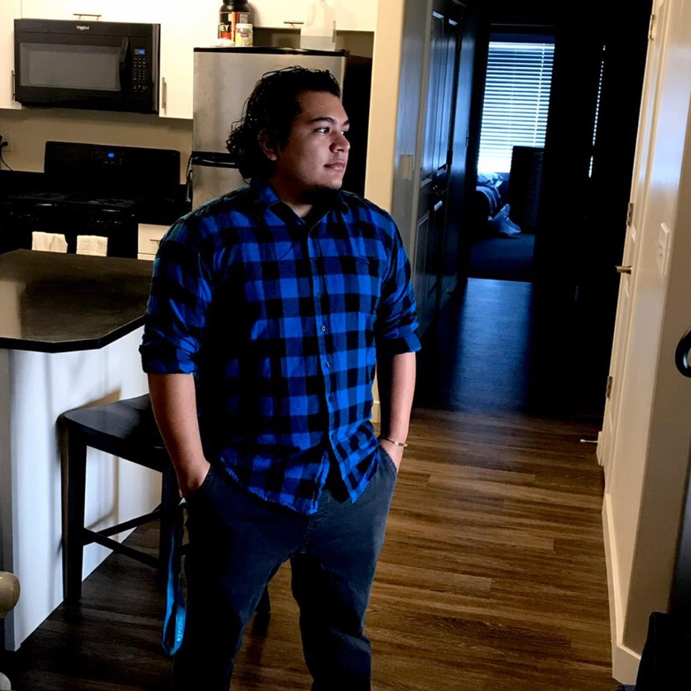

EightFoldGames is an indie company that strives to improve on every aspect . Founded in 2016, we are committed to developing enriching experiences, Our hope is to expand experiences into peoples lives using video games, so that all cultures, ages and backgrounds can enjoy these games.
Meet the Team
I am a iOS Engineer who empowers and inspires people for the culture, learning environment, and ownership in the world of Apple.
I am a IT professional looking for the right team to contribute my skills. I'm excited about art and technology working together to create a user friendly environment. This is why being on the right IT team could help me gain valuable years of experience to move towards a great user experience developer in the future.
 I am a iOS Developer looking for my first team to help build apps. Ive learned iOS Development from both an iOS Bootcamp and from a software engineer in the industry. I have been in retail for over 5+ years mainly as a store manager and now I'm ready to make a different contribution as a software developer. As an iOS developer a great achievement of mine so far is completing two apps and launching them both on the App Store, Currently working on a new Digital board game in SpriteKit while I look for role in iOS.
I am a Web Developer looking for a team to help build something new , i've learned HTML, CSS ,SASS and JAVASCRIPT from the Team Treehouse TechDegree program.